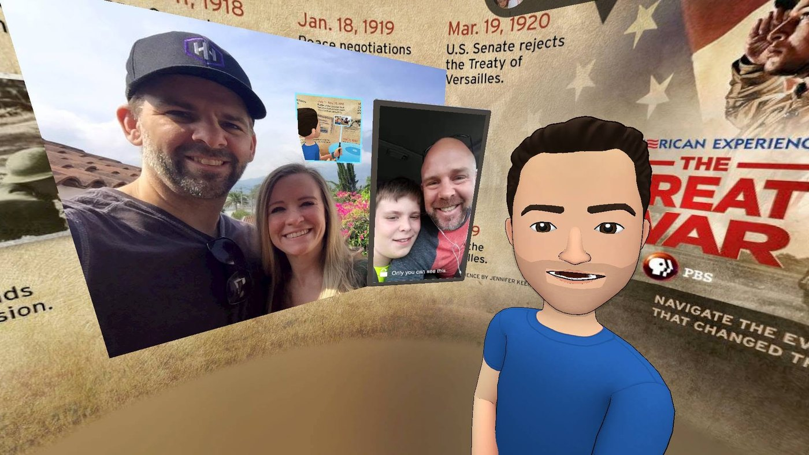

Live from Virtual Reality
Producing a broadcast from inside a headset — presenting as an avatar, in a room that did not exist, to an audience that was not in it.


What it was
A live production made entirely inside virtual reality. The host was an avatar, the set was rendered, the guests were wherever they physically were, and the audience watched a broadcast of a place none of them were standing in.
Every part of the normal job changes. There is no lighting to set, because there is no light. Camera moves cost nothing, which sounds like a gift and is actually a problem — when the camera can do anything, the only thing stopping a shot being meaningless is your own restraint. And you cannot see the people you are talking to, only the cartoon approximations of them, so the timing of a conversation has to be rebuilt from scratch.
Why I keep doing this early
The most useful thing about being in a headset in the mid-2010s was not the headset. It was arriving at every argument about the next technology having already had the argument once, in a version nobody was excited about yet.
I gave a TEDx talk in 2017 wearing one, which is a slightly ridiculous thing to do on a stage and was entirely the point. Buying the hardware early is a research method. It is also, reliably, the cheapest way to find out which parts of the hype are load-bearing.

Related
The TEDxNashville work and the Cost of Valor films are the same habit applied to different hardware.